Código
grViz("
digraph {
graph [ranksep = 0.2, rankdir=LR]
node [shape=plaintext]
X
Y
Z
W
edge [minlen = 3]
X -> Y
Z -> X
W -> Y
}
", width = 150, height = 40)En esta sección formalizaremos el concepto de modelos gráficos, en particular gráficas dirigidas acícilcas (DAGs), y veremos cómo sirven para representar supuestos causales acerca de los procesos que nos interesa modelar para contestar preguntas, o dicho de otra manera, cómo expresamos más formalmente supuestos acerca de la historia de los datos que nos interesa examinar.
En primer lugar, podemos pensar cómo se asignan los valores de las variables en nuestro proceso generador de datos. Pensamos entonces de qué depende directamente cada variable para determinar su valor, de manera que cada nodo \(X\) de la variable se puede escribir por ejemplo como \(Y = f(X, W)\) y \(Z = g(X)\). Esto es desde el punto de vista téorico y de conocimiento de área que tenemos (además de supuestos que provienen del diseño del estudio, si los datos son generados bajo un diseño elegido por nosotros), y representan supuestos causales. En este ejemplo particular, tenemos un modelo gráfico asociado, que escribimos como:
grViz("
digraph {
graph [ranksep = 0.2, rankdir=LR]
node [shape=plaintext]
X
Y
Z
W
edge [minlen = 3]
X -> Y
Z -> X
W -> Y
}
", width = 150, height = 40)Nótese que no describimos exactamente cómo son las funciones que relacionan las variables, sino más bien qué variables son causas directas de qué otras. Por ejemplo, aunque en nuestro ejemplo de arriba \(Y\) puede estar correlacionado con \(Z\), no hay una causa directa a \(Y\), porque cambios en \(Z\) afectan a \(X\), y es el cambio en \(X\) que es causa directa de \(Y\).
En un modelo gráfico, dibujamos una arista de un nodo \(X\) a un nodo \(Y\) si el valor de la variable \(Y\) depende directamente del valor de la variable \(X\), es decir si \(X\) es una causa directa de \(Y\). En estos modelos no especificamos la fórmula o naturaleza de cada relación directa, sino simplemente que ésta existe.
Trabajamos principalmente con modelos causales que pueden representarse como DAGs (gráficas dirigidas acícilcas), donde no existen ciclos de causas entre las variables.
Existen dos tipos de nodos en estas gráficas: variables exógenas que no dependen de otros nodos para tomar su valor, y variables endógenas que son descendientes de al menos otro nodo. Cuando conocemos las variables exógenas, en teoría podemos simular todo el sistema si especificamos el modelo de cada nodo endógeno.
Nota: hay varias maneras de construir modelos causales además de DAGs. Una de ellas es sistemas de ecuaciones diferenciales (en el tiempo), que a veces son necesarias para modelos de biología, clima o epidemiología por ejemplo. También pueden utilizarse modelos de agentes (modelamos partes más pequeñas o simples del sistemas y sus interacciones). Quizá los DAGs son los modelos con más populares y tienen amplia aplicabilidad.
Para entender los conceptos empezamos con una historia de datos sencilla. En un juego de azar, supongamos que escogemos al azar un número \(X\) entre 0 y 1, y luego tiramos dos veces cinco volados con probabilidad de sol \(X\). Medimos el número de soles en cada prueba como \(S_1\) y \(S_2\). Finalmente, la ganancia \(G\) obtenida es la suma de \(S_1+S_2\) si el día es lluvioso o solamente \(S_1\) si el día es soleado.
Nótese que tanto como \(S_1\) y \(S_2\) dependen de su valor de \(X\), además de que dependen de otras variables \(U_1\) y \(U_2\), muy complicadas, que determinan cómo caen los volados. \(G\) depende de su valor de \(S_1\) y \(S_2\), además de depender de una variable \(D\) que describe si el día actual es lluvioso o soleado. El diagrama causal resultante es el que sigue, donde consideramos que observaremos \(U1\), \(U2\) y \(U3\).
grViz("
digraph {
graph [ranksep = 0.2, rankdir=LR]
node [shape=circle]
U1
U2
U3
U4
node [shape=plaintext]
S1
S2
X
edge [minlen = 3]
X -> S1
X -> S2
U1 -> S1
U2 -> S2
S1 -> G
S2 -> G
D -> G
U3 -> D
U4 -> X
{
rank = same; S1; S2;U1;U2
}
}
")En este ejemplos no podemos saber \(U1\) y \(U2\), y no nos interesa modelar la física de monedas, manera de lanzarlas, etc. En este ejemplo también no consideraremos qué hace que un día sea soleado o lluvioso (no nos interesa modelar el clima). En este momento, en teoría tenemos ecuaciones determinísticas para todas las variables, y si conocemos todas las variables exógenas \(U1,U2,U3,U4\) podríamos determinar exactamente lo que va a suceder con la ganancia, por ejemplo, o cualquier otra variable del sistema.
Sin embargo, muchas veces excluímos variables exógenas que sólo afectan a una variable endógena, y consideramos que las relaciones de dependiencia de la gráfica son probabilísticas:
grViz("
digraph {
graph [ranksep = 0.2, rankdir=LR]
node [shape=circle]
node [shape=plaintext]
S1
S2
X
edge [minlen = 3]
X -> S1
X -> S2
S1 -> G
S2 -> G
D -> G
{
rank = same; S1; S2
}
}
")Usualmente, consideramos que las flechas en un DAG indican que un cambio en el nodo padre causa un cambio en la distribución de probabilidades de los hijos (no necesariamente lo determina).
Usamos estas distribuciones para abstraer otros efectos exógenos que determinan los hijos cuyo mecanismo no nos interesa modelar causalmente.
Los modelos gráficos también nos muestran cómo hacer factorizaciones útiles de los datos.
Si tenemos cualquier conjunto de variables aleatorias \(X_1,\ldots,X_p\), la distibución conjunta de estas variables \(p(x_1,x_2,\ldots, x_p)\) nos sirve para calcular cualquier cantidad de interés que involucra estas variables.
Recordamos ahora la regla del producto: para cualquier conjunto de variables aleatorias \(X_1,\ldots,X_p\), la conjunta se puede factorizar siempre como:
\[p(x_1,x_2,\ldots, x_p) = p(x_1)p(x_2|x_1)p(x_3|x_1,x_2)\ldots p(x_p|x_1,x_2,\ldots,x_{p-1})\] Hay muchas manera de escribir esta factorización, dependiendo de cómo ordenamos las variables. El modelo gráfico nos da un ordenamiento natural (primero van padres y luego hijos) de las variables que nos permite aplicar la regla del producto, según la dirección de las flechas del diagrama:
En el ejemplo de arriba, un ordenamiento es \(X,D,S1,S2,G\). Entonces, podemos escribir la regla del producto:
\[p(x,s_1,s_2,d,g) = p(x)p(d|x)p(s_1|x,d)p(s_2|x,d,s_1)p(g|x,d,s1,s2)\] Que podemos simplificar porque por ejemplo, \(p(s_2|x, d,s_1) = p(s_2|x)\), ya que \(s_1\) no influye directamente en \(s_2\). Por la misma lógica, \(p(d|x) = p(d)\) y \(p(g|x,s_1,s_2,d) = p(g|s_1,s_2,d)\), etc. Entonces:
\[p(x,s_1,s_2,d,g) = p(x)p(d)p(s_1|x)p(s_2|x)p(g|s_1,s_2,d)\] Al incluir sólo las causas directas obtenemos una manera más parsimoniosa de modelar las relaciones entre estas variables, lo cual nos servirá más tarde cuando apliquemos modelos estadísticos para aprender de estas relaciones. Bajo nuestros supuestos no es necesario modelar toda la cadena de dependencias, pues algunas flechas no están presentes.
En nuestro caso, suponemos de acuerdo con lo que sabemos:
Para entender mejor la parsimonia que podemos alcanzar usando supuestos causales, considera la cadena \(X\to Y\to Z\to W\to A\). Imagina que cada una de estas variables puede tomar 2 valores. La conjunta de cinco variables binarias \((X,Y,Z,W,A)\), en general, requiere de \(2^5-1=31\) parámetros. Sin embargo, si se satisface \(X\to Y\to Z\to W\to A\) sólo requirimos 1 parámetro para \(p(x)\), 2 para \(p(y|x)\), 2 para \(p(z|y)\), etc. En total, sólo necesitamos 9 parámetros.
Supongamos que tenemos un DAG con variables \(X_i\). Si denotamos por \(pa_i\) a los padres de \(X_i\), entonces siempre podemos factorizar la conjunta como
\[p(x_1,\ldots, x_p) = \prod_{i=1}^p p(x_i|pa_i)\] Las posibles conjuntas que satisfacen esta ecuación decimos que son consistentes con el DAG.
El orden del modelo gráfico también nos indica cómo simular las variables de la gráfica. Como cada modelo gráfico nos da una factorización de la conjunta, podemos utlizar esta para simular datos una vez que conocemos o estimamos las relaciones de dependencia directa. Empezamos con las variables exógenas (que no tienen padres) y vamos simulando hacia adelante.
En nuestro ejemplo simulamos primero \(X\) y \(D\). A partir de \(X\) podemos simular \(X_1\) y \(S_2\), y a partir de \(D\), junto con \(S_1\) y \(S_2\), podemos simular \(G\). En nuestro ejemplo tendríamos
simular_juego <- function(N){
x <- runif(N)
d <- sample(c("lluvioso","soleado"), N, replace = TRUE, prob = c(0.3,0.7))
s1 <- rbinom(N, 5, x)
s2 <- rbinom(N, 5, x)
g <- ifelse(d=="lluvioso", s1+s2, s1)
tibble(x, d, s1, s2, g)
}
simular_juego(5)# A tibble: 5 × 5
x d s1 s2 g
<dbl> <chr> <int> <int> <int>
1 0.658 soleado 5 5 5
2 0.166 soleado 0 1 0
3 0.232 soleado 0 2 0
4 0.645 soleado 3 2 3
5 0.660 soleado 3 2 3Veremos que para razonar acerca de las asociaciones e independencias (condicionales o no) que pueden aparecer o no en una conjunta, podemos examinar la gráfica que la represente, o dicho de otra manera, entender bajo qué condiciones puede propagarse información de un nodo a otro.
Recuerda qué es la independencia condicional. Decimos por ejemplo que \(X\) y \(Y\) son condicionalmente independientes dada \(Z\) cuando se cumplen las siguientes ecuaciones equivalentes:
Es decir, en estos casos si conocemos \(Y\), por ejemplo, información acerca de \(Z\) no cambia la condicional \(p(y|x,z)=p(y|z)\). También vemos que la conjunta de \(X\) y \(Y\) condicionada a \(Z\) se factoriza como el producto de las condicionales de \(X\) y \(Y\) dada \(Z\).
Este es un concepto fundamental en estadística, y también en inferencia causal. Como vimos arriba, nos permite construir modelos para sistemas considerablemente grandes, pues muchas veces las relaciones causales directas importantes son ralas (es decir, no todo está conectado con todo).
Las independencias condicionales que forzosamente se cumplen para cualquier relación funcional entre variables del sistema (o dicho de otra manera, cualquier conjunta consistente con el DAG), pueden leerse directamente de la estructura del modelo gráfico (DAG) correspondiente (ver definición de \(d\)-separación más adelante).
Para entender modelos gráficos en general, y que independencias condicionales implican o no, basta endender cuatro estructuras básicas que pueden aparecer. ßConsideremos tres variables \(X\), \(Y\) y \(Z\). Las cuatro estructuras que tenemos que entender en primer lugar pueden verse también como métodos de razonamiento lógico derivados de las leyes de probabilidad:
Todas estas estructuras pueden ser fuente de confusión, en el sentido de que producen patrones de correlación que pueden ser malinterpretados causalmente si no utilizamos supuestos causales.
En el siguiente ejemplo, llamamos a \(Z\) una causa que es común a \(X\) y \(Y\).
grViz("
digraph {
graph [ranksep = 0.2]
node [shape=plaintext]
X
Y
Z
edge [minlen = 3]
Z -> X
Z -> Y
}
", width = 200, height = 50)En este caso,
Este tipo de estructura también se llama bifurcación, o decimos más tradicionalmente que \(Z\) es un confusor en esta gráfica. Variación en \(Z\) produce variación conjunta de \(X\) y \(Y\).
Por ejemplo, podríamos encontrar que el uso de aspirina \(X\) está asociado a una mortalidad más alta \(Y\). Una causa común es enfermedad grave que produce dolor (\(Z\)). Sin embargo, si condicionamos a personas sanas, veríamos que no hay relación entre uso de aspirina y mortalidad, igualmente veríamos que entre las personas enfermas el uso de aspirina no les ayuda a vivir más tiempo.
En este caso, tenemos:
\[p(x, y, z) = p(z)p(x|z)p(y|z)\] Y como el lado izquierdo es igual (en general) a \(p(x,y|z)p(z)\), obtenemos la independiencia condicional de \(X\) y \(Y\) dado \(Z\).
rbern <- function(n, prob){
rbinom(n, 1, prob = prob)
}
simular_confusor <- function(n = 10){
z <- rbern(n, p = 0.5) |> as.numeric()
x <- rbern(n, p = z * 0.3 + (1 - z) * 0.8)
y <- rbinom(n, 4, z * 0.9 + (1 - z) * 0.3)
tibble(x, z, y)
}
sims_confusor <- simular_confusor(50000)\(X\) y \(Y\) están asociadas
sims_confusor |> select(x, y) |>
count(x, y) |>
group_by(x) |>
mutate(p_cond = n / sum(n)) |>
select(x, y, p_cond) |>
ggplot(aes(x = y, y = p_cond, fill = factor(x))) +
geom_col(position = "dodge") +
labs(subtitle = "Condicional de Y dada X")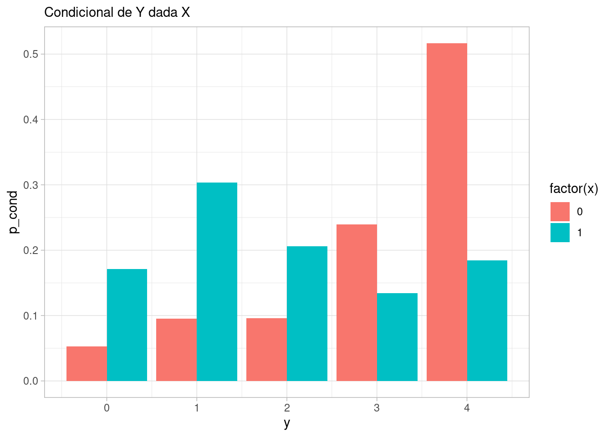
Lo cual lo vemos también si calculamos la correlación:
cor(sims_confusor |> select(x,y)) |> round(3) x y
x 1.000 -0.424
y -0.424 1.000Sin embargo, si condicionamos a \(Z\), que puede tomar los valores 0 o 1, vemos que \(X\) y \(Y\) son independientes, o dicho de otra manera, la condicional de \(Y\) dada \(Z\) y \(X\) sólo depende de \(Z\):
sims_confusor |>
count(x, y, z) |>
group_by(x, z) |>
mutate(p_cond = n / sum(n)) |>
select(x, y, z, p_cond) |>
ggplot(aes(x = y, y = p_cond, fill = factor(x))) +
geom_col(position = "dodge") + facet_wrap(~ z) +
labs(subtitle = "Condicional de Y dada X y Z")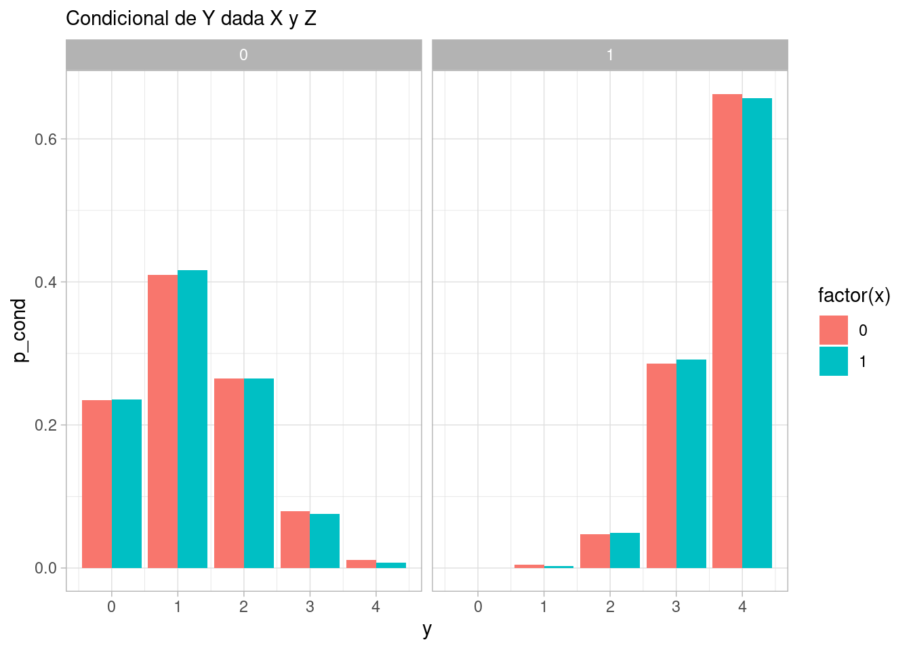
Una consecuencia es por ejemplo que la correlación debe ser cero:
cor(sims_confusor |> filter(z == 1) |> select(x,y)) |> round(3) x y
x 1.000 0.009
y 0.009 1.000cor(sims_confusor |> filter(z == 0) |> select(x,y)) |> round(3) x y
x 1.000 -0.002
y -0.002 1.000Un ejemplo con variables continuas podría ser como sigue:
simular_bifurcacion <- function(n = 10){
z <- rbern(n, p = 0.5)
x <- rnorm(n, 100 + 20 * z, 15)
y <- rnorm(n, 100 + 30 * z, 20)
tibble(x, z, y)
}
sims_bifurcacion <- simular_bifurcacion(5000)\(X\) y \(Y\) son dependientes (por ejemplo si vemos la media condicional de \(Y\) dado \(X\):
ggplot(sims_bifurcacion, aes(x = x, y = y, colour = z)) +
geom_point(alpha = 0.2) +
geom_smooth(span = 1, se = FALSE)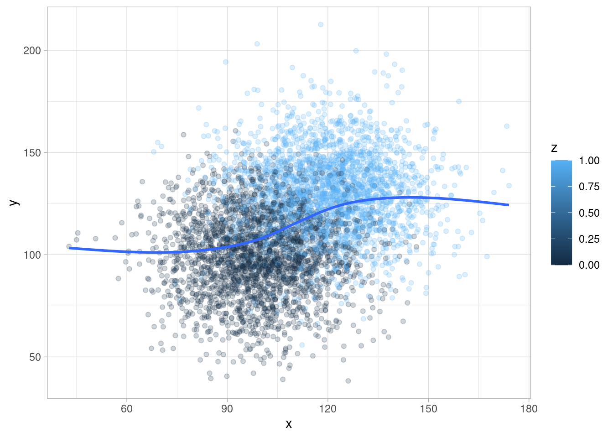
Si condicionamos a \(Z\), no hay dependencia entre \(X\) y \(Y\)
ggplot(sims_bifurcacion, aes(x = x, y = y, colour = z, group = z)) +
geom_point(alpha = 0.2) +
geom_smooth(span = 2)En este ejemplo de McElreath (2020), se muestra que regiones de Estados Unidos con tasas más altas de matrimonio también tienen tasas más altas de divorcio.
data(WaffleDivorce)
WaffleDivorce |>
ggplot(aes(x = Marriage, y = Divorce)) +
geom_point() +
geom_smooth(method = "lm")`geom_smooth()` using formula = 'y ~ x'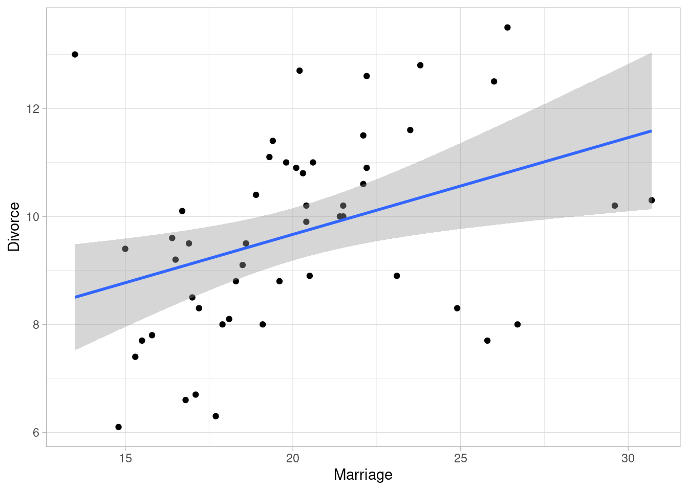
Aunque esta es una correlación clara, lo que nos interesa en este caso el efecto causal \(M\to D\). Es importante notar que hay considerable variabilidad de la edad promedio al casarse a lo largo de los estados:
WaffleDivorce |>
ggplot(aes(sample = MedianAgeMarriage)) +
geom_qq() +
geom_qq_line()Para el modelo causal, tenemos que considerar las siguientes afirmaciones que no son muy difíciles de justificar:
Esto implica que tenemos que considerar una causa común de la edad al casarse en nuestro diagrama causal:
grViz("
digraph {
graph [ranksep = 0.2]
node [shape=plaintext]
M
D
Edad
edge [minlen = 3]
Edad -> M
Edad -> D
M -> D
{rank=same; M; D;}
}
", width = 200, height = 50)Por la discusión de arriba, es claro que es necesario considerar la edad al casarse si queremos estimar el efecto de tasa de matrimonio en la tasa de divorcio. Es posible que la correlación entre estas dos tasas puede ser explicada solamente por la edad al casarse, y que en realidad al flecha \(M\to D\) sea muy débil o inexistente.
Ya que tenemos este modelo causal básico, tendríamos que proponer un proceso generador, proponer un modelo estadístico, y probar nuestra estimación. Este paso nos lo saltaremos (ver sección anterior), aunque sigue siendo necesario.
Por el momento recordemos que si condicionamos (se dice también estratificar) por edad al casarse, y no vemos relación condicional entre las dos tasas, la relación que vimos en los datos es factible que haya aparecido por la causa común que induce correlación. Una manera en que estratificamos o condicionamos a una variable continua en un modelo lineal, como sigue:
\[D_i\sim N(\mu_i, \sigma)\] donde \[\mu_i = \alpha + \beta_M M_i + \beta_E Edad_i\] ¿De qué manera estamos estratificando por edad en este ejemplo? Obsérvese que para cada Edad que fijemos, la relación entre \(M\) y \(D\) es:
\[\mu_i = (\alpha + \beta_E Edad) + \beta_M M_i \] Cada valor de \(E\) produce una relación diferente entre \(M\) y \(D\) (en este caso particular, una recta diferente con distinta altura).
Ahora tenemos que poner iniciales para terminar nuestro modelo estadístico. En este punto poner iniciales informadas para estos coeficientes puede ser complicado (depende de cuánta demografía sabemos). Podemos usar un enfoque más simple, considerando las variables estandarizadas. De esta forma podemos poner iniciales más estándar. Utilizaremos
escalar <- function(x){
(x - mean(x))/sd(x)
}
WaffleDivorce <- WaffleDivorce |>
mutate(Marriage_est = escalar(Marriage),
Divorce_est = escalar(Divorce),
MedianAgeMarriage_est = escalar(MedianAgeMarriage))
datos_lista <- list(
N = nrow(WaffleDivorce),
d_est = WaffleDivorce$Divorce_est,
m_est = WaffleDivorce$Marriage_est,
edad_est = WaffleDivorce$MedianAgeMarriage_est)mod_mat_div <- cmdstan_model("./src/matrimonio-divorcio-1.stan")
print(mod_mat_div)data {
int<lower=0> N;
vector[N] d_est;
vector[N] m_est;
vector[N] edad_est;
}
parameters {
real alpha;
real beta_M;
real beta_E;
real <lower=0> sigma;
}
transformed parameters {
vector[N] w_media;
// determinístico dado parámetros
w_media = alpha + beta_M * m_est + beta_E * edad_est;
}
model {
// partes no determinísticas
d_est ~ normal(w_media, sigma);
alpha ~ normal(0, 1);
beta_M ~ normal(0, 0.5);
beta_E ~ normal(0, 0.5);
sigma ~ normal(0, 1);
}
generated quantities {
real dif;
{
//simulamos 50 estados
int M = 50;
array[M] real dif_sim;
for(i in 1:M){
real edad_sim_est = normal_rng(0, 1);
// fijamos el valor de M en 0 y 1 para el modelo con do(M)
real M_sim_0 = normal_rng(alpha * beta_M * 0 + beta_E * edad_sim_est, sigma);
real M_sim_1 = normal_rng(alpha * beta_M * 1 + beta_E * edad_sim_est, sigma);
dif_sim[i] = M_sim_1 - M_sim_0;
}
dif = mean(dif_sim);
}
}sims_mod <- mod_mat_div$sample(data = datos_lista,
chains = 4,
init = 0.1, step_size = 0.1,
iter_warmup = 1000,
iter_sampling = 1000,
refresh = 0)Running MCMC with 4 sequential chains...
Chain 1 finished in 0.1 seconds.
Chain 2 finished in 0.1 seconds.
Chain 3 finished in 0.1 seconds.
Chain 4 finished in 0.1 seconds.
All 4 chains finished successfully.
Mean chain execution time: 0.1 seconds.
Total execution time: 0.6 seconds.resumen <- sims_mod$summary(c("alpha", "beta_M", "beta_E", "sigma"))resumen |>
ggplot(aes(x = variable, y = mean, ymin = q5, ymax = q95)) +
geom_hline(yintercept = 0, color = "red") +
geom_point() +
geom_linerange() +
coord_flip()Y el resultado que obtenemos es que no observamos un efecto considerable de las tasas de matrimonio en las tasas de divorcio, una vez que estratificamos por la causa común de edad de matrimonio. Este ejemplo es simple y podemos ver el efecto causal directo en un sólo coeficiente \(\beta_M\), pero de todas formas haremos contrastes como hicimos en la parte anterior.
La manera más directa de definir efecto causal, bajo nuestros supuestos causales, es a través de intervenciones (imaginarias o reales).
Entendemos saber una causa como poder predecir correctamente las consecuencias de una intervención en el sistema generador de datos.
En nuestro caso, el diagrama de arriba muestra nuestro modelo causal. Si nosotros alteramos este proceso causal, interviniendo en la tasa de matrimonio, la distribución de matrimonio ya no depende de la Edad (pues está bajo nuestro control). Esto quiere decir que ahora consideramos el siguiente diagrama, en donde la nueva dependendencia del divorcio del matrimonio la escribiremos como \(p(D|do(M))\):
grViz("
digraph {
graph [ranksep = 0.2]
node [shape=plaintext]
M
D
Edad
edge [minlen = 3]
Edad -> D
M -> D
{rank=same; M; D;}
}
", width = 200, height = 50)Es decir, borramos todas las flechas que caen en \(M\) (pues la estamos interveniendo al valor que queramos), y luego simulando \(D\).
En nuestro ejemplo (ve el código de Stan de arriba, la parte de generated quantities) simularemos los 50 estados bajo dos intervenciones: todos tienen la tasa promedio de matrimonio vs. los 50 estados con tasa de matrimonio un error estándar por encima de la tasa promedio. Repetimos esta comparación sobre todas las simulaciones de la posterior:
sims_tbl <- sims_mod$draws(format = "df") |>
select(dif)
sims_tbl |> summarize(
q5 = quantile(dif, 0.05),
q95 = quantile(dif, 0.95)
)# A tibble: 1 × 2
q5 q95
<dbl> <dbl>
1 -0.268 0.267ggplot(sims_tbl, aes(x = dif)) +
geom_histogram(bins = 50) +
geom_vline(xintercept = 0, color = "red")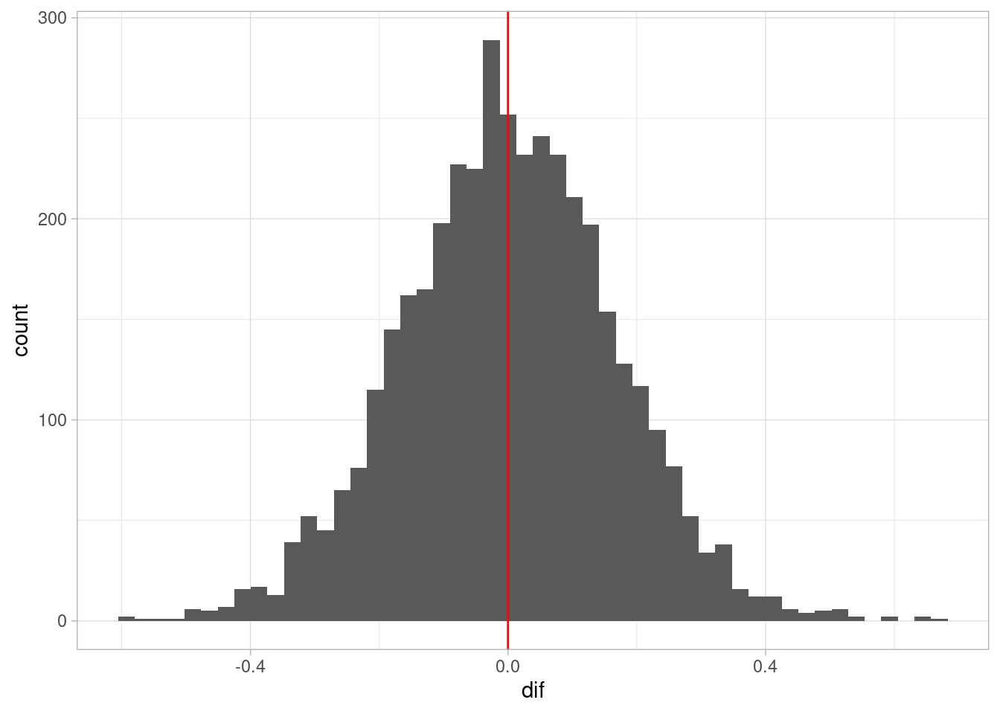
En este caso, vemos que el resultado de la intervención no tienen una tendencia clara hacia incrementar o disminuir la tasa de divorcio, aunque existe variabilidad por la incertidumbre que tenemos acerca de las relaciones modeladas.
La relación que vimos entre matrimonio y divorcio en nuestro ejemplo es probablemente producida por la causa común Edad, y no necesariamente es causal.
Finalmente, antes de terminar sería apropiado hacer chequeos predictivos posteriores, pero por el momento los omitiremos para avanzar en los otros tipos de estructuras básicas en los DAGs.
En este caso tenemos:
grViz("
digraph {
graph [ranksep = 0.2, rankdir=LR]
node [shape=plaintext]
X
Y
Z
edge [minlen = 3]
X -> Z
Z -> Y
}
", width = 150, height = 20)En este caso,
Podemos pensar en \(Z\) como un mediador del efecto de \(X\) sobre \(Y\). Si no permitimos que \(Z\) varíe, entonces la información de \(X\) no fluye a \(Y\).
Por ejemplo, si \(X\) tomar o no una medicina para el dolor de cabeza, \(Z\) es dolor de cabeza y \(Y\) es bienestar general, \(X\) y \(Y\) están relacionadas. Sin embargo, si condicionamos a un valor fijo de dolor de cabeza, no hay relación entre tomar la medicina y bienestar general.
En términos de factorización, podemos checar la independencia condicional: como \(p(x,y,z) = p(x)p(z|x)p(y|z)\), entonces
\[p(x, y | z) = p(x,y,z) / p(z) = (p(x)(z|x)) (p(y|z) / p(z))\] y vemos que el lado izquierdo se factoriza en una parte que sólo involucra a \(x\) y \(z\) y otro factor que sólo tiene a \(y\) y \(z\): no hay términos que incluyan conjuntamente a \(x\), \(y\) y \(z\). Podemos de cualquier forma continuar notando
\[p(x)p(z|x)/p(z) = p(x,z)/p(z) = p(x | z)\] de modo que
\[p(x, y | z) = p(x|z) p(y|z) \]
Y mostramos un ejemplo simulado:
rbern <- function(n, prob){
rbinom(n, 1, prob = prob)
}
simular_mediador <- function(n = 10){
x <- rbern(n, p = 0.5) |> as.numeric()
z <- rbern(n, p = x * 0.8 + (1 - x) * 0.3)
y <- rbinom(n, 2, z * 0.7 + (1 - z) * 0.5)
tibble(x, z, y)
}
sims_mediador <- simular_mediador(50000)\(X\) y \(Y\) son dependientes:
sims_mediador |> select(x, y) |>
count(x, y) |>
group_by(x) |>
mutate(p_cond = n / sum(n)) |>
select(x, y, p_cond) |>
ggplot(aes(x = y, y = p_cond, fill = factor(x))) +
geom_col(position = "dodge") +
labs(subtitle = "Condicional de Y dada X")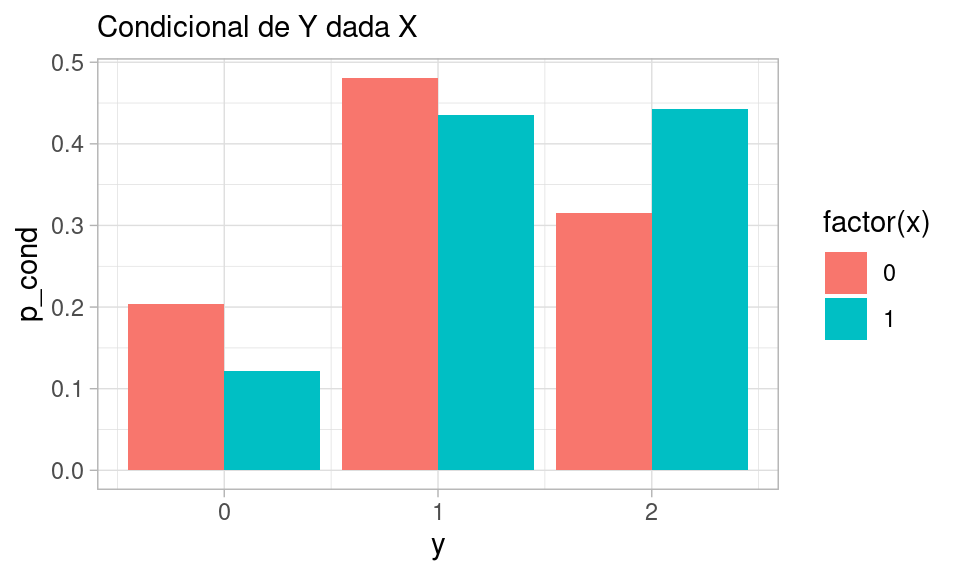
Sin embargo, si condicionamos a \(Z\), que puede tomar los valores 0 o 1:
sims_mediador |>
count(x, y, z) |>
group_by(x, z) |>
mutate(p_cond = n / sum(n)) |>
select(x, y, z, p_cond) |>
ggplot(aes(x = y, y = p_cond, fill = factor(x))) +
geom_col(position = "dodge") + facet_wrap(~ z) +
labs(subtitle = "Condicional de Y dada X y Z")Y vemos que la condicional de \(Y\) dada \(Z\) y \(X\) sólo depende de \(Z\). Una consecuencia es por ejemplo que la correlación debe ser cero:
cor(sims_mediador |> filter(z == 1) |> select(x,y)) |> round(3) x y
x 1.000 -0.002
y -0.002 1.000cor(sims_mediador |> filter(z == 0) |> select(x,y)) |> round(3) x y
x 1.00 -0.01
y -0.01 1.00Podemos también hacer un ejemplo continuo:
simular_mediador <- function(n = 10){
x <- rnorm(n, 100, 10)
prob <- 1 / (1 + exp(-(x - 100)/5))
z <- rbern(n, p = prob)
y <- rnorm(n, 100 + 30 * z, 15)
tibble(x, z, y)
}
sims_mediador <- simular_mediador(2000)\(X\) y \(Y\) son dependientes (por ejemplo si vemos la media condicional de \(Y\) dado \(X\):
ggplot(sims_mediador, aes(x = x, y = y, colour = z)) + geom_point() +
geom_smooth(span = 1, se = FALSE)`geom_smooth()` using method = 'gam' and formula = 'y ~ s(x, bs = "cs")'Warning: The following aesthetics were dropped during statistical transformation: colour
ℹ This can happen when ggplot fails to infer the correct grouping structure in
the data.
ℹ Did you forget to specify a `group` aesthetic or to convert a numerical
variable into a factor?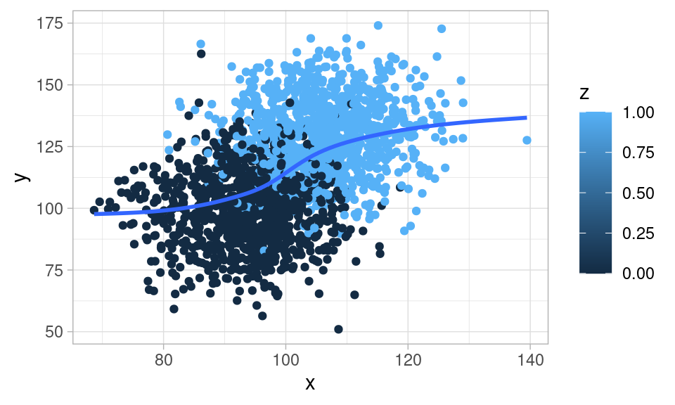
Si condicionamos a \(Z\), no hay dependencia entre \(X\) y \(Y\)
ggplot(sims_mediador, aes(x = x, y = y, colour = z, group = z)) +
geom_point() +
geom_smooth(span = 2)`geom_smooth()` using method = 'gam' and formula = 'y ~ s(x, bs = "cs")'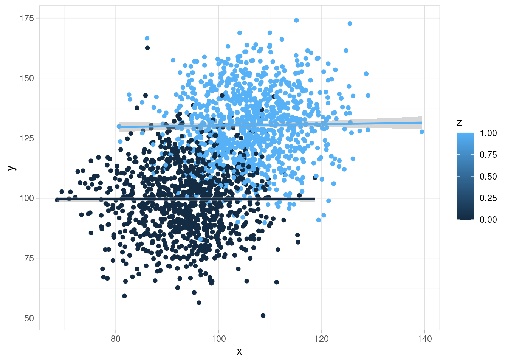
Nótese que en este ejemplo sí hay un efecto causal de \(X\) sobre \(Y\), pero está mediado por otra variable \(Z\). Si condicionamos a \(Z\), no hay relación entre \(X\) y \(Y\). El análisis condicionado podría llevarnos a una conclusión errónea de que \(X\) no influye sobre \(Y\).
Nota que no existe una diferencia estadística entre una bifurcación y una cadena: en ambos casos, las variables \(X\) y \(Y\) están correlacionadas, y son independientes una vez que condicionamos o estratificamos por \(Z\). Sin embargo, su tratamiento en inferencia causal es muy diferente.
En McElreath (2020) se discute que en algunos estudios experimentales, se estratifica por variables que son consecuencia del tratamiento. Esto induce sesgo post-tratamiento, lo cual puede llevar a equivocaciones en donde parece que el tratamiento no tiene efecto cuando sí lo tiene. Incluso bajo condiciones de experimento (donde el tratamiento es asignado al azar) estratificar por mediadores es una mala idea. Ver más en McElreath (2020), donde por ejemplo cita una fuente que en estudios experimentales de Ciencia Política, casi la mitad de ellos sufre de este tipo de sesgo por estratificación por mediadores.
Este ejemplo es de Pearl y Mackenzie (2018). En 1926 Burks recolectó datos sobre qué tanto podría esperarse que la inteligencia de padres se hereda a los hijos (medido según una prueba de IQ). Construyó un diagrama parecido al de abajo:
grViz("
digraph {
graph [ranksep = 0.2]
node [shape = circle]
U
node [shape=plaintext]
edge [minlen = 3]
IntPadres -> NSE
NSE -> IntHijos
U -> NSE
U -> IntHijos
IntPadres -> IntHijos
{rank = same; U}
}
")Como el NSE es del hogar (una medida general de estatus social), se consideró en principio como una variable pre-tratamiento a la inteligencia de los niños por la que tradicionalmente se controlaba. Burks notó que hacer esto tenía no era apropiado, pues tiene como consecuencia cortar parte del efecto total de la inteligencia sobre el la inteligencia de los hijos. En otras palabras: la inteligencia de los padres hace más probable mejor NSE, y mejor NSE presenta mejores condiciones de desarrollo para sus hijos. Estatificar por esta variable bloquea este efecto.
Adicionalmente, como veremos, condicionar a NSE abre un camino no causal entre Inteligencia de Padres e Hijos.
En este caso, a \(Z\) también le llamamos un colisionador. Este es el caso que puede ser más difícil de entender en un principio. Consiste de la siguiente estructura:
grViz("
digraph {
graph [ranksep = 0.2]
node [shape=plaintext]
X
Y
Z
edge [minlen = 3]
X -> Z
Y -> Z
}
", width = 200, height = 50)Por ejemplo, si observamos que el pasto está mojado, entonces saber que no llovió implica que probablemente se encendieron los aspersores.
Como la conjunta se factoriza como:
\[p(x,y,z) = p(x)p(y)p(z|x,y)\] Entonces integrando sobre \(Z\):
\[p(x,y) = \int p(x,y,z)dz = p(x)p(y)\int p(z|x,y)\, dz\] pero \(p(z|x,y)\) integra uno porque es una densidad, de forma que \(x\) y \(y\) son independientes.
Mostramos un ejemplo simulado:
simular_colisionador <- function(n = 10){
x <- rbern(n, 0.5)
y <- rbinom(n, 2, 0.7)
z <- rbern(n, p = 0.1 + 0.7 * x * (y > 1))
tibble(x, z, y)
}
sims_colisionador <- simular_colisionador(50000)\(X\) y \(Y\) son independientes:
sims_colisionador|> select(x, y) |>
count(x, y) |>
group_by(x) |>
mutate(p_cond = n / sum(n)) |>
select(x, y, p_cond) |>
ggplot(aes(x = y, y = p_cond, fill = factor(x))) +
geom_col(position = "dodge") +
labs(subtitle = "Condicional de Y dada X")cor(sims_colisionador |> select(x,y)) x y
x 1.000000000 0.001284161
y 0.001284161 1.000000000Sin embargo, si condicionamos a \(Z\), que puede tomar los valores 0 o 1:
sims_colisionador |>
count(x, y, z) |>
group_by(x, z) |>
mutate(p_cond = n / sum(n)) |>
select(x, y, z, p_cond) |>
ggplot(aes(x = y, y = p_cond, fill = factor(x))) +
geom_col(position = "dodge") + facet_wrap(~ z) +
labs(subtitle = "Condicional de Y dada X y Z")Y vemos que la condicional de \(Y\) dada \(Z\) y \(X\) depende de \(X\) y de \(Z\).
Las correlaciones condicionales, por ejemplo, no son cero:
print("Dado Z = 0")[1] "Dado Z = 0"cor(sims_colisionador |> filter(z == 0) |> select(x,y)) |> round(3) x y
x 1.000 -0.279
y -0.279 1.000print("Dado Z = 1")[1] "Dado Z = 1"cor(sims_colisionador |> filter(z == 1) |> select(x,y)) |> round(3) x y
x 1.000 0.378
y 0.378 1.000Otro ejemplo con variables continuas:
simular_colisionador_2 <- function(n = 10){
x <- rnorm(n, 100, 20)
y <- rnorm(n, 100, 20)
z <- rbern(n, p = 0.92 * ((x + y) > 220) + 0.05)
tibble(x, z, y)
}
sims_colisionador <- simular_colisionador_2(1000)\(X\) y \(Y\) son independientes:
ggplot(sims_colisionador, aes(x = x, y = y)) + geom_point()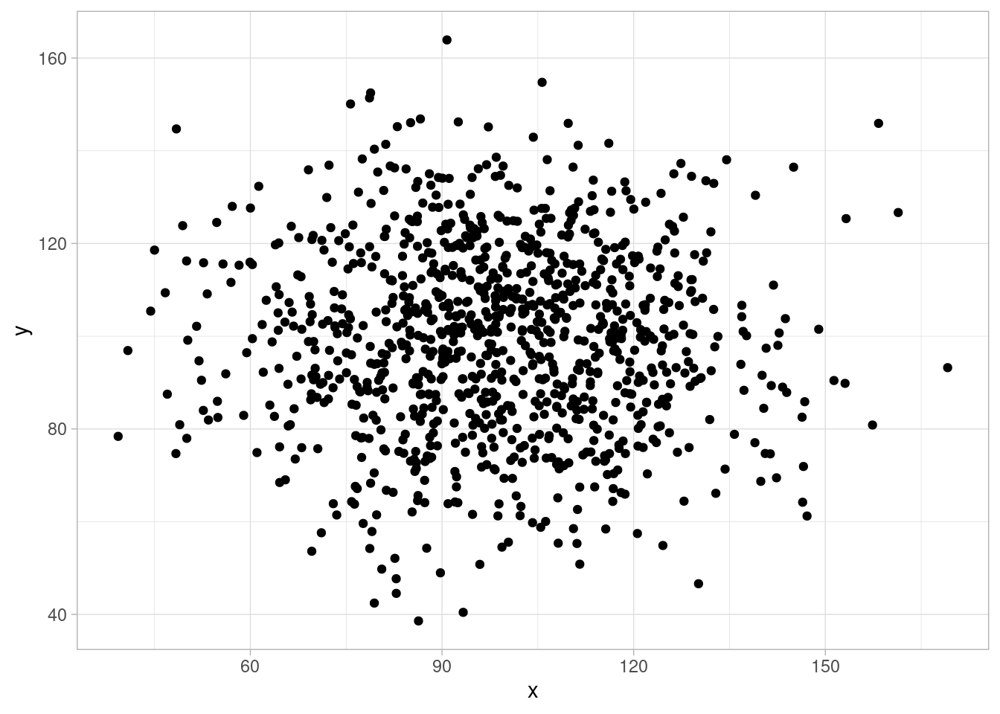
Sin embargo, si condicionamos a un valor de \(Z\), \(X\) y \(Y\) ya no son independientes:
ggplot(sims_colisionador, aes(x = x, y = y, group = z, colour = factor(z))) +
geom_point() + geom_smooth(method = "lm", se = FALSE) `geom_smooth()` using formula = 'y ~ x'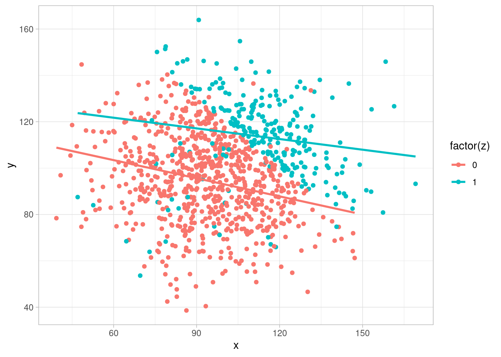
Y vemos que condicional a \(Z\), \(X\) y \(Y\) están correlacionadas, aunque no hay relación causal entre \(X\) y \(Y\).
Existen muchos ejemplos de colisionadores en análisis de datos. Algunos ejemplos se deben a sesgo de selección (puedes dibujar diagramas para cada uno de estos):
Pero también puede ser consecuencia de condicionar a variables endógenos (que resultan ser colisionadores), y ocurren como parte del procesamiento o construcción de modelos. Un ejemplo interesante de McElreath (2020) es el siguiente:
Condicionar a un descendiente puede entenderse como “condicionar parcialmente” o “débilmente” a los padres de ese descendiente.
Por ejemplo, condicionar a un colisionador también produce dependencias condicionales:
grViz("
digraph {
graph [ranksep = 0.2]
node [shape=plaintext]
X
Y
Z
A
edge [minlen = 3]
X -> Z
Y -> Z
Z -> A
}
", width = 200, height = 50)En este caso,
Dependiendo de la naturaleza de la asociación entre el colisionador \(Z\) y su descendiente \(A\), esta dependencia puede ser más fuerte o más débil.
Por ejemplo, en nuestro ejemplo donde el pasto mojado es un colisionador entre cuánta agua dieron los aspersores y cuánta lluvia cayó, un descendiente del pasto mojado es el estado de las plantas del jardín. Aunque los aspersores trabajan independientemente de la lluvia, si observamos que las plantas se secaron entonces lluvia y aspersores están correlacionados: por ejemplo, si noto que los aspersores están descompuestos, entonces concluimos que no hubo lluvia.
grViz("
digraph {
graph [ranksep = 0.2]
node [shape=plaintext]
X [label = lluvia]
Y [label = aspersores]
Z [label = humedad]
A [label = plantas]
edge [minlen = 3]
X -> Z
Y -> Z
Z -> A
}
", width = 200, height = 50)simular_desc <- function(n = 10){
x <- rbern(n, 0.5)
y <- rbinom(n, 2, 0.7)
z <- rbern(n, p = 0.1 + 0.7 * x * (y > 1))
a <- rbern(n, p = 0.5 + 0.5 * z)
tibble(x, z, y, a)
}
sims_colisionador <- simular_desc(50000)
# No hay correlación
cor(sims_colisionador$x, sims_colisionador$y)[1] -0.0004825883Sin embargo,
cor(sims_colisionador |> filter(a ==0) |> select(x,y)) x y
x 1.0000000 -0.2810922
y -0.2810922 1.0000000cor(sims_colisionador |> filter(a ==1) |> select(x,y)) x y
x 1.0000000 0.1112297
y 0.1112297 1.0000000Verificamos que en nuestro modelo de Santa Clara, efectivamente nuestro modelo no implica ninguna dependencia no condicional entre sensibilidad de la prueba y prevalencia. Eso debería ser claro de la simulación, pero de todas formas lo checamos
library(cmdstanr)
mod_sc <- cmdstan_model("./src/sclara.stan")
print(mod_sc)data {
int<lower=0> N;
int<lower=0> n;
int<lower=0> kit_pos;
int<lower=0> n_kit_pos;
int<lower=0> kit_neg;
int<lower=0> n_kit_neg;
}
parameters {
real<lower=0, upper=1> theta; //seroprevalencia
real<lower=0, upper=1> sens; //sensibilidad
real<lower=0, upper=1> esp; //especificidad
}
transformed parameters {
real<lower=0, upper=1> prob_pos;
prob_pos = theta * sens + (1 - theta) * (1 - esp);
}
model {
// modelo de número de positivos
n ~ binomial(N, prob_pos);
// modelos para resultados del kit
kit_pos ~ binomial(n_kit_pos, sens);
kit_neg ~ binomial(n_kit_neg, esp);
// iniciales para cantidades no medidas
theta ~ beta(1.0, 10.0);
sens ~ beta(2.0, 1.0);
esp ~ beta(2.0, 1.0);
}En este caso, no pondremos información acerca de positivos en la prueba:
datos_lista <- list(N = 0, n = 0,
kit_pos = 103, n_kit_pos = 122,
kit_neg = 399, n_kit_neg = 401)
ajuste <- mod_sc$sample(data = datos_lista, refresh = 1000, iter_sampling = 400)Running MCMC with 4 sequential chains...
Chain 1 Iteration: 1 / 1400 [ 0%] (Warmup)
Chain 1 Iteration: 1000 / 1400 [ 71%] (Warmup)
Chain 1 Iteration: 1001 / 1400 [ 71%] (Sampling)
Chain 1 Iteration: 1400 / 1400 [100%] (Sampling)
Chain 1 finished in 0.0 seconds.
Chain 2 Iteration: 1 / 1400 [ 0%] (Warmup)
Chain 2 Iteration: 1000 / 1400 [ 71%] (Warmup)
Chain 2 Iteration: 1001 / 1400 [ 71%] (Sampling)
Chain 2 Iteration: 1400 / 1400 [100%] (Sampling)
Chain 2 finished in 0.0 seconds.
Chain 3 Iteration: 1 / 1400 [ 0%] (Warmup)
Chain 3 Iteration: 1000 / 1400 [ 71%] (Warmup)
Chain 3 Iteration: 1001 / 1400 [ 71%] (Sampling)
Chain 3 Iteration: 1400 / 1400 [100%] (Sampling)
Chain 3 finished in 0.0 seconds.
Chain 4 Iteration: 1 / 1400 [ 0%] (Warmup)
Chain 4 Iteration: 1000 / 1400 [ 71%] (Warmup)
Chain 4 Iteration: 1001 / 1400 [ 71%] (Sampling)
Chain 4 Iteration: 1400 / 1400 [100%] (Sampling)
Chain 4 finished in 0.0 seconds.
All 4 chains finished successfully.
Mean chain execution time: 0.0 seconds.
Total execution time: 0.5 seconds.sims <- ajuste$draws(c("theta", "sens", "esp"), format = "df")
resumen <- ajuste$summary(c("theta"))ggplot(sims, aes(x = theta, y = sens)) + geom_point() +
scale_x_sqrt()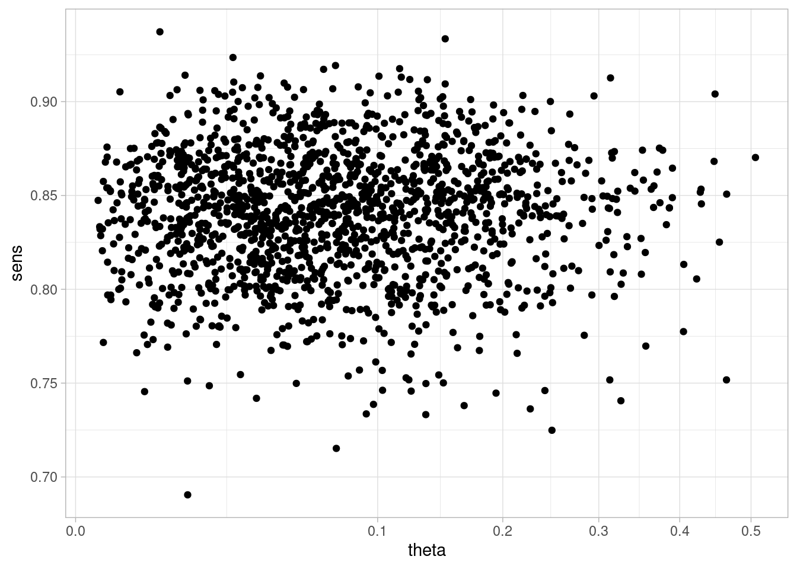
No vemos ninguna asocación entre estas dos variables.
Sin embargo, al condicionar al valor de Positivos, creamos una relación que no podemos interpretar como casual. En este caso particular supondremos prácticamente fija la sensibilidad para ver solamente lo que sucede en el colisionador de especificidad y número de positivos (la especificidad en este ejemplo es más crítica):
datos_lista <- list(N = 3300, n = 50,
kit_pos = 1030000, n_kit_pos = 1220000, # números grandes para que esté practicamente
# fija la sensibilidad
kit_neg = 399, n_kit_neg = 401)
ajuste <- mod_sc$sample(data = datos_lista, refresh = 1000, iter_sampling = 400)Running MCMC with 4 sequential chains...
Chain 1 Iteration: 1 / 1400 [ 0%] (Warmup)
Chain 1 Iteration: 1000 / 1400 [ 71%] (Warmup)
Chain 1 Iteration: 1001 / 1400 [ 71%] (Sampling)
Chain 1 Iteration: 1400 / 1400 [100%] (Sampling)
Chain 1 finished in 0.0 seconds.
Chain 2 Iteration: 1 / 1400 [ 0%] (Warmup)
Chain 2 Iteration: 1000 / 1400 [ 71%] (Warmup)
Chain 2 Iteration: 1001 / 1400 [ 71%] (Sampling)
Chain 2 Iteration: 1400 / 1400 [100%] (Sampling)
Chain 2 finished in 0.0 seconds.
Chain 3 Iteration: 1 / 1400 [ 0%] (Warmup)
Chain 3 Iteration: 1000 / 1400 [ 71%] (Warmup)
Chain 3 Iteration: 1001 / 1400 [ 71%] (Sampling)
Chain 3 Iteration: 1400 / 1400 [100%] (Sampling)
Chain 3 finished in 0.0 seconds.
Chain 4 Iteration: 1 / 1400 [ 0%] (Warmup)
Chain 4 Iteration: 1000 / 1400 [ 71%] (Warmup)
Chain 4 Iteration: 1001 / 1400 [ 71%] (Sampling)
Chain 4 Iteration: 1400 / 1400 [100%] (Sampling)
Chain 4 finished in 0.0 seconds.
All 4 chains finished successfully.
Mean chain execution time: 0.0 seconds.
Total execution time: 0.5 seconds.sims <- ajuste$draws(c("theta", "sens", "esp"), format = "df")
resumen <- ajuste$summary(c("theta"))ggplot(sims, aes(x = theta, y = esp)) + geom_point() 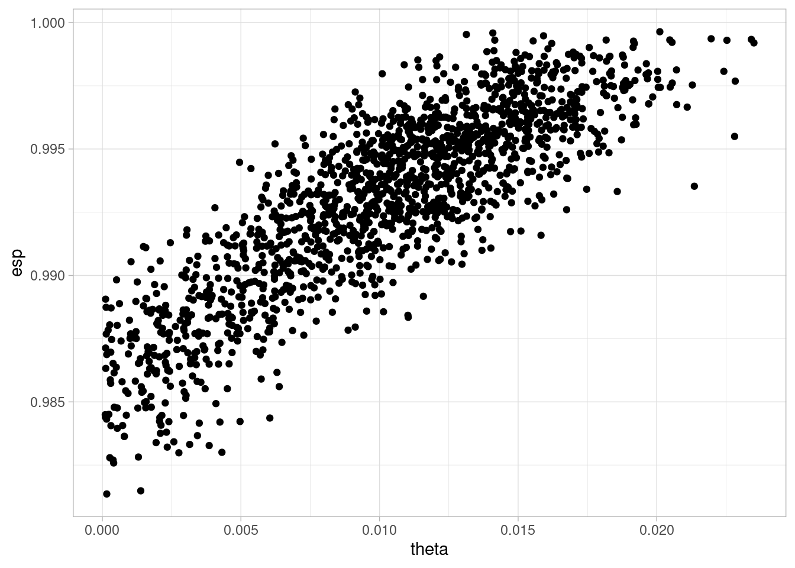
Y vemos que condiconando al colisionador, obtenemos una relación fuerte entre prevalencia y especificidad de la prueba: necesitaríamos más datos de especificidad para obtener una estimación útil.
Con estas tres estructuras elementales podemos entender de manera abstracta la existencia o no de asociaciones entre nodos de cualquier gráfica dirigida.
Ahora buscaremos describir todas las posibles independendencias condicionales y no condicionales que pueden aparecer en una gráfica, para entender cómo aparecen asociaciones entre variables de nuestro modelo, dependiendo del tipo de condicionamiento que hacemos.
Veremos que el criterio es algorítmico. Más adelante discutiremos cuáles de estas asociaciones se deben a efectos causales y cuáles no, y esto nos permitirá establecer estrategias de condicionamiento (qué variables controlar o no), recolección de datos y diseño de experimentos para construir los estimadores correctos de los efectos causales de interés.
Ahora supongamos que \(Z = \{Z_1,Z_2,\ldots, Z_q\}\) son una colección de nodos. Decimos que un camino \(p\) entre \(X\) y \(Y\) está activo condicional a los nodos en \(Z\) cuando:
En caso contrario, decimos que el camino \(p\) está bloqueado.
Si \(Z\) bloquea todos los caminos posibles entre \(X\) y \(Y\), decimos que \(X\) y \(Y\) están \(d\)-separados condicionalmente a \(Z\), o \(d\)-separados por \(Z\).
Según la discusión que tuvimos arriba de los modos de razonamiento en gráficas de modelos probabilísticos, el siguiente teorema no es sorpresa:
En una DAG \(G\):
Nota 1: nótese que este teorema nos da una manera abstracta de razonar acerca de la asociación en un modelo gráfico: no es necesario saber la forma particular de las condicionales para utilizarlo.
Nota 2: Vale la pena mencionar que el segundo inciso en general es una implicación más fuerte: cuando no hay \(d\)-separación, existe algún tipo de dependencia casi seguro (en el sentido probabilístico de posible conjuntas).
Nota 3: Las independencias condicionales también pueden ser útiles para checar los supuestos de nuestro modelo: si encontramos asociaciones fuertes (condicionales o no) entre variables que nuestra estructura implica independencia condicional, entonces puede ser que nuestra estructura causal requiera revisión. Qué tanto podemos probar esto depende del tamaño de los datos que tengamos y de el tipo de condicionamiento que estamos haciendo.
Finalmente (ver por ejemplo Koller y Friedman (2009), p 75), existe un algoritmo eficiente para encontrar todas las posibles independencias condicionales implicadas por una gráfica:
Existe un algoritmo de complejidad lineal en el tamaño de la gráfica para encontrar todos los nodos con caminos activos a un nodo \(X\) condicional a las variables \(A\).
Ver por ejemplo el sitio dagitty.net, donde podemos poner nuestra gráfica y enlistar todas los supuestos de independencia condicional implicados por un modelo.
grViz("
digraph {
graph [ranksep = 0.2]
node [shape=plaintext]
Z
W
X
Y
U
edge [minlen = 3]
Z -> W
X -> W
X -> Y
W -> U
S -> Y
UZ -> Z
V -> Z
V -> S
}
")Consideremos la relación entre Z y Y. Primero vemos que hay dos caminos entre \(Z\) y \(Y\), que son \(p_1:X\gets V \to S\) y \(p_2: Z\to W \gets X \to Y\)
En primer lugar, ¿son independientes si no condicionamos a ninguna variable? No, pues el camino \(p_1\) es activo, e induce correlación.
¿Son condicionalmente independientes si condicionamos a \(V\)? En este caso, condicionar a \(V\) bloquea el camino \(p_1\). El camino \(p_2\) está bloqueado por el colisionador \(W\), así que todos los caminos están bloqueados si condicionamos a \(V\). Por lo tanto \(Z\) y \(Y\) son condicionalmente independientes dado \(V\), o \(Z\perp\!\!\!\perp Y|V\).
Si condicionamos a \(W y V\), ¿son independientes \(Z\) y \(Y\)? No. El camino \(p_1\) está bloqueado, así que ese no induce asociación. Sin embargo, al condicionar al colisionador \(W\) activamos el camino \(p_2\).
Ahora supongamos que tenemos datos condicionales a algún valor de \(W\) solamente. Condicionando a \(V\) bloqueamos el camino \(p_1\), pero el camino \(p_2\) está activo. ¿Qué pasaría si condicionamos adicionalmente a \(X\)? En este caso, el conjunto de condicionamiento es \(\{V, W, X\}\). El camino \(p_2\) está bloqueado. Y aunque condicionamos al colisionador, \(X\) bloque el camino. Por lo tanto \(Z\) y \(Y\) son condicionalmente independientes dado \(\{V, W, X\}\).
Repite el ejemplo anterior para la siguiente gráfica. Analiza que pasa si condicionamos o no a valores de \(T\), y qué pasa si adicionalmente condicionamos a \(W\), y luego repite los pasos del ejemplo anterior.
grViz("
digraph {
graph [ranksep = 0.2]
node [shape=plaintext]
Z
W
X
Y
U
T
edge [minlen = 3]
T -> Z
T -> Y
Z -> W
X -> W
X -> Y
W -> U
S -> Y
UZ -> Z
}
")En análisis de factores intentamos expresar variables observadas \(X_i\) en función de relativamente pocas variables latentes \(F_j\). El diagrama que representa sus supuestos básicos es uno como el siguiente:
grViz("
digraph {
graph [ranksep = 0.2]
node [shape=circle]
F1 [label = <F<sub>1</sub> > ]
F2 [label = <F<sub>2</sub> > ]
node [shape=plaintext]
X1 [label = <X<sub>1</sub> > ]
X2 [label = <X<sub>2</sub> > ]
X3 [label = <X<sub>3</sub> > ]
X4 [label = <X<sub>4</sub> > ]
X5 [label = <X<sub>5</sub> > ]
edge [minlen = 3]
F1 -> X1
F1 -> X2
F1 -> X3
F1 -> X4
F1 -> X5
F2 -> X1
F2 -> X2
F2 -> X3
F2 -> X4
F2 -> X5
}
")Usualmente hacemos supuestos adicionales como linealidad \[E[X_i|F_1, F_2] = \lambda_{i,1}F_1+ \lambda_{i,1}F_1\] y por ejemplo normalidad de \(X_i\) condicional a los factores.
Si el DAG que consideramos representa relaciones causales (mecanísticas) entre las variables, es decir, qué variable “escucha” a qué otras para decidir su valor, entonces podemos hacer la siguiente definición:
En un DAG, los caminos causales entre \(X\) y \(Y\) son de la forma \(X\to U_1\to U_2 \to \cdots U_j \to Y\). Puede haber varios de ellos en un diagrama dado, y cada uno representa un mecanismo en que cambios en \(X\) producen cambios en \(Y\)
Si nos interesa el efecto total de \(X\) sobre \(Y\),
Si nos interesa el efecto directo de \(X\) sobre \(Y\),
En la tarea vimos un diagrama como sigue para el problema de los zorros:
grViz("
digraph {
graph [ranksep = 0.3, rankdir = LR]
node [shape=plaintext]
A
F
G
W
edge [minlen = 3]
A -> F
F -> G
F -> W
G -> W
}
")#, width = 200, height = 50)Vimos que para calcular el efecto directo de \(F\) sobre \(W\), por ejemplo, es necesario bloquear el camino que pasa por \(G\) (estratificar por este nodo). Para el efecto total no es necesario condicionar a ningún otro nodo.
Ahora supongamos que creemos que \(G\) y \(W\) tienen una causa común \(U\) no observada.
grViz("
digraph {
graph [ranksep = 0.3, rankdir = LR]
node [shape = circle]
U
node [shape=plaintext]
A
F
G
W
edge [minlen = 3]
A -> F
F -> G
F -> W
G -> W
U -> G
U -> W
{rank=same U;G}
}
")#, width = 200, height = 50)En este caso: